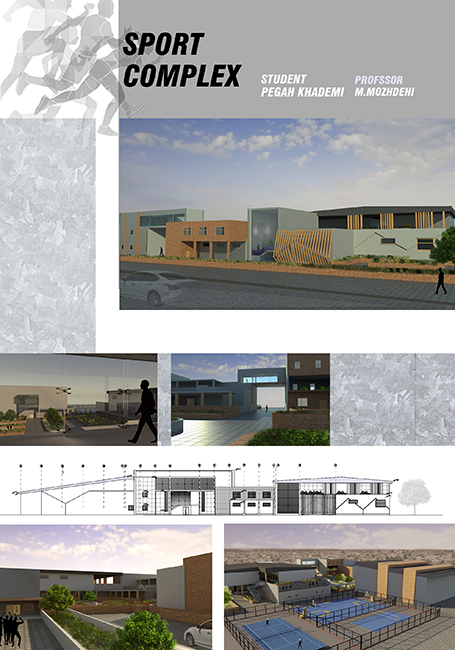
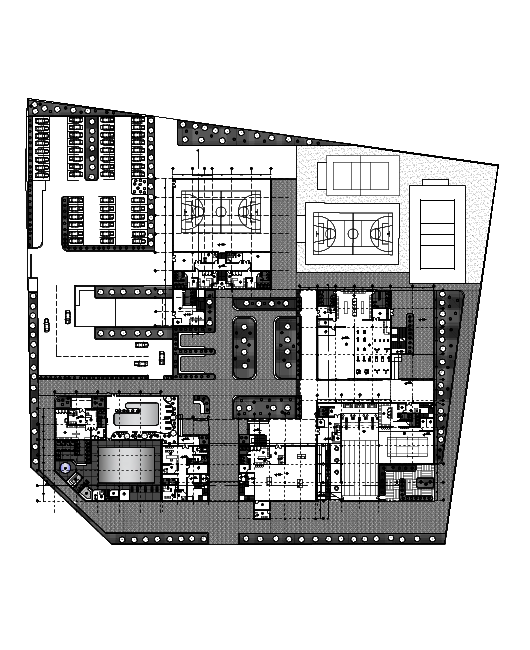

The sport complex project is about Companionship of forms, shapes and functions.
we located a site which needed public sport facility in Rasht.
I started to learn algoritmic design by Grasshopper at that time so I tried to used my new knowlage in
designing the facade.
▾


This plan has two axises and the stronger one
is entrance axis.there are several seprate
spaces which are designed to be united from outsid.
▾